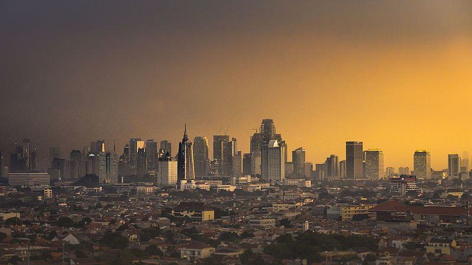
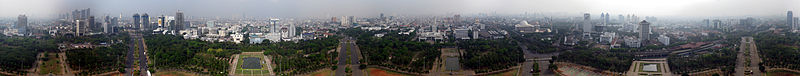
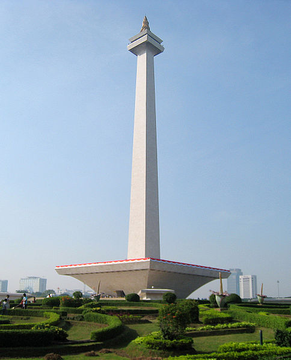

Sejarah

Nama Jakarta sudah digunakan sejak masa pendudukan Jepang tahun 1942, untuk menyebut wilayah bekas Gemeente Batavia
yang diresmikan pemerintah Hindia Belanda pada tahun 1905. Nama "Jakarta" merupakan kependekan dari kata Jayakarta yaitu
nama dari Bahasa Sansekerta yang diberikan oleh orang-orang Demak dan Cirebon di bawah pimpinan Fatahillah
(Faletehan) setelah menyerang dan berhasil menduduki pelabuhan Sunda Kelapa pada tanggal 22 Juni 1527 dari Portugis. Nama ini
diterjemahkan sebagai "kota kemenangan" atau "kota kejayaan", namun sejatinya berarti "kemenangan yang diraih oleh sebuah perbuatan atau
usaha" karena berasal dari dua kata Sansekerta yaitu Jaya yang berarti "kemenangan" dan Karta yang berarti
"dicapai".
Geografis

Jakarta berlokasi di sebelah utara Pulau Jawa, di muara Ciliwung, Teluk Jakarta. Jakarta terletak di dataran
rendah pada ketinggian rata-rata 8 meter dpl. Hal ini yang mengakibatkan Jakarta sering dilanda banjir. sebelah selatan Jakarta
merupakan daerah pegunungan dengan curah hujan tinggi. Jakarta dilewati oleh 13 sungai yang semuanya bermuara ke Teluk Jakarta.
Sungai yang terpenting ialah Ciliwung, yang membelah kota menjadi dua. sebelah timur dan selatan Jakarta berbatasan dengan provinsi
Jawa Barat dan di sebelah barat berbatasan dengan provinsi Banten.
Wisata

Jakarta merupakan salah satu destinasi yang cukup baik di Indonesia. Untuk meningkatkan jumlah wisatawan yang berkunjung ke Jakarta,
pemerintah mengadakan program "Enjoy Jakarta". Beberapa tempat pariwisata yang terkenal dan biasa dikunjungi oleh para wisatawan lokal
dan mancanegara di antaranya adalah Taman Mini Indonesia Indah, Kebun Binatang Ragunan, dan Taman Impian Jaya Ancol
(termasuk taman bermain Dunia Fantasi dan Seaworld Indonesia). Disamping itu Jakarta juga memiliki banyak tempat wisata
sejarah, yakni berupa museum dan tugu. Diantaranya adalah Museum Gajah, Museum Fatahillah, dan Monumen Nasioanl.
Disamping tempat wisatanyanyang memadai, saat ini di Jakarta telah tersedia sekitar 219 hotel berbintang, 3.173 restoran, dan 40 balai
pertemuan. Hampir semua jaringan hotel kelas dunia telah membuka gerainya di Jakarta, seperti JW Marriott Jakarta,
The Ritz-Carlton Jakarta, Shangri-La Hotel, dan Grand Hyatt Jakarta.